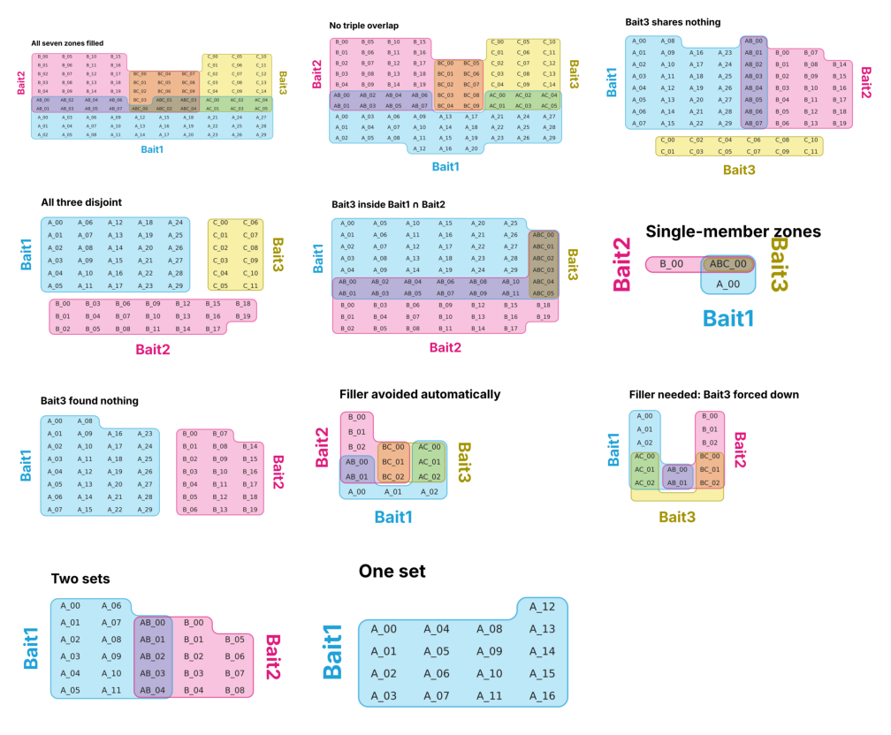

import tempfile
from pathlib import Path
import pandas as pd
from fastcore.test import *
from itemiset.cli import run
from itemiset.layout import CHECKS, check_layout, layout_sets
from itemiset.render import plot
from itertools import combinations
from matplotlib.figure import Figure
import matplotlib.image as mpimg
import io
from IPython.display import ImageEdge cases
Whole-workflow tests: a file goes in, a figure and a zone table come out, and everything is checked.
Each case below is the kind of data that has broken diagrams before: empty overlaps, a bait with no hits, one set inside another, single proteins. For every case this notebook:
- writes the sets to a file, as a user would;
- runs the
itemisetcommand on it, writing a PNG and a zone table; - checks the figure exists, that the zone table lists every item once in the right zone, and that the layout passes all five checks;
- checks the notes: filler cells and missing sets must always be reported.
The same steps run for the Python API and for Venn mode. When run as a test (nbdev-test), any failure stops the build.
def from_zones(spec, names=("Bait1", "Bait2", "Bait3")):
"Sets from zone sizes, e.g. {'A': 3, 'AB': 2}. Items are named after their zone."
code = dict(zip("ABC", names))
k = max("ABC".index(ch) + 1 for z in spec for ch in z)
sets = {code[ch]: [] for ch in "ABC"[:k]}
for z, n in spec.items():
for j in range(n):
for ch in z: sets[code[ch]].append(f"{z}_{j:02d}")
return sets
def write_wide(sets, path):
"Write sets as one column per set, padding with blanks."
n = max([len(v) for v in sets.values()] + [1])
pd.DataFrame({k: v + [""] * (n - len(v)) for k, v in sets.items()}).to_csv(path, index=False)The cases
Each case gives zone sizes, options, and what the notes must say.
CASES = [
("All seven zones filled", {"A": 30, "B": 20, "C": 15, "AB": 8, "AC": 6, "BC": 10, "ABC": 5}, {}, []),
("No triple overlap", {"A": 30, "B": 20, "C": 15, "AB": 8, "AC": 6, "BC": 10}, {}, []),
("Bait3 shares nothing", {"A": 30, "B": 20, "AB": 8, "C": 12}, {}, []),
("All three disjoint", {"A": 30, "B": 20, "C": 12}, {}, []),
("Bait3 inside Bait1 ∩ Bait2", {"A": 30, "B": 20, "AB": 12, "ABC": 6}, {}, []),
("Single-member zones", {"A": 1, "B": 1, "ABC": 1}, {}, []),
("Bait3 found nothing", {"A": 30, "B": 20, "C": 0}, {}, ["no members"]),
("Filler avoided automatically", {"A": 3, "B": 3, "AB": 2, "AC": 3, "BC": 3}, {}, []),
("Filler needed: Bait3 forced down", {"A": 3, "B": 3, "AB": 2, "AC": 3, "BC": 3}, {"bottom": "Bait3"}, ["filler"]),
("Two sets", {"A": 12, "B": 9, "AB": 5}, {}, []),
("One set", {"A": 17}, {}, []),
]Running them through the command line
tmp = Path(tempfile.mkdtemp())
results = []
for i, (title, spec, opts, must_note) in enumerate(CASES):
sets = from_zones(spec)
src, png, zones = tmp/f"case{i:02d}.csv", tmp/f"case{i:02d}.png", tmp/f"case{i:02d}_zones.csv"
write_wide(sets, src)
args = [str(src), "-o", str(png), "--zones-out", str(zones), "--title", title]
if "bottom" in opts: args += ["--bottom", opts["bottom"]]
lay = run(args)
# the figure exists
assert png.exists() and png.stat().st_size > 2000, title
# every item is listed once, in the right zone
zt = pd.read_csv(zones)
want = {item: sorted(s for s, v in sets.items() if item in v) for v in sets.values() for item in v}
test_eq(sorted(zt["item"]), sorted(want))
for _, row in zt.iterrows():
test_eq(sorted(s for s in sets if s in zt.columns and row[s] == 1), want[row["item"]])
# the layout is sound
res = check_layout(lay, sets)
assert all(res.values()), (title, res)
# nothing goes unreported
for word in must_note: assert any(word in n for n in lay.notes), (title, lay.notes)
if "filler" not in must_note: test_eq(lay.n_filler, 0)
results.append(dict(case=title, items=lay.n_items, cells=len(lay.cells), filler=lay.n_filler,
bottom=lay.roles.get("C", ""), notes=" ".join(lay.notes), **res))
pd.DataFrame(results)Wrote /tmp/tmpit11j9e5/case00.png
Roles: A=Bait2, B=Bait3, C=Bait1 | group widths (L, M, R): (4, 3, 3)
Bait1 30
Bait2 20
Bait3 15
Bait1 ∩ Bait3 6
Bait1 ∩ Bait2 8
Bait2 ∩ Bait3 10
Bait1 ∩ Bait2 ∩ Bait3 5
Wrote /tmp/tmpit11j9e5/case01.png
Roles: A=Bait2, B=Bait3, C=Bait1 | group widths (L, M, R): (4, 2, 3)
Bait1 30
Bait2 20
Bait3 15
Bait1 ∩ Bait3 6
Bait1 ∩ Bait2 8
Bait2 ∩ Bait3 10
Wrote /tmp/tmpit11j9e5/case02.png
Roles: A=Bait1, B=Bait2, C=Bait3 | group widths (L, M, R): (4, 1, 3)
Bait1 30
Bait2 20
Bait3 12
Bait1 ∩ Bait2 8
Wrote /tmp/tmpit11j9e5/case03.png
Roles: A=Bait1, B=Bait3, C=Bait2 | group widths (L, M, R): (5, 0, 2)
Bait1 30
Bait2 20
Bait3 12
Wrote /tmp/tmpit11j9e5/case04.png
Roles: A=Bait1, B=Bait3, C=Bait2 | group widths (L, M, R): (6, 1, 0)
Bait1 30
Bait2 20
Bait1 ∩ Bait2 12
Bait1 ∩ Bait2 ∩ Bait3 6
Wrote /tmp/tmpit11j9e5/case05.png
Roles: A=Bait2, B=Bait3, C=Bait1 | group widths (L, M, R): (1, 1, 0)
Bait1 1
Bait2 1
Bait1 ∩ Bait2 ∩ Bait3 1
Wrote /tmp/tmpit11j9e5/case06.png
Roles: A=Bait1, B=Bait2 | group widths (L, M, R): (4, 0, 3)
Bait1 30
Bait2 20
Note: Set 'Bait3' has no members and was left out of the diagram.
Wrote /tmp/tmpit11j9e5/case07.png
Roles: A=Bait2, B=Bait3, C=Bait1 | group widths (L, M, R): (1, 1, 1)
Bait1 3
Bait2 3
Bait1 ∩ Bait3 3
Bait1 ∩ Bait2 2
Bait2 ∩ Bait3 3
Wrote /tmp/tmpit11j9e5/case08.png
Roles: A=Bait1, B=Bait2, C=Bait3 | group widths (L, M, R): (1, 1, 1)
Bait1 3
Bait2 3
Bait1 ∩ Bait3 3
Bait1 ∩ Bait2 2
Bait2 ∩ Bait3 3
Note: 3 blank filler cell(s) added to 'Bait3 only' to keep that set connected.
Wrote /tmp/tmpit11j9e5/case09.png
Roles: A=Bait1, B=Bait2 | group widths (L, M, R): (2, 1, 2)
Bait1 12
Bait2 9
Bait1 ∩ Bait2 5
Wrote /tmp/tmpit11j9e5/case10.png
Roles: A=Bait1 | group widths (L, M, R): (4,)
Bait1 17| case | items | cells | filler | bottom | notes | One cell per item | Each set is one piece | No set has a hole | Each zone is one piece | No stray white pockets | |
|---|---|---|---|---|---|---|---|---|---|---|---|
| 0 | All seven zones filled | 94 | 94 | 0 | Bait1 | True | True | True | True | True | |
| 1 | No triple overlap | 89 | 89 | 0 | Bait1 | True | True | True | True | True | |
| 2 | Bait3 shares nothing | 70 | 70 | 0 | Bait3 | True | True | True | True | True | |
| 3 | All three disjoint | 62 | 62 | 0 | Bait2 | True | True | True | True | True | |
| 4 | Bait3 inside Bait1 ∩ Bait2 | 68 | 68 | 0 | Bait2 | True | True | True | True | True | |
| 5 | Single-member zones | 3 | 3 | 0 | Bait1 | True | True | True | True | True | |
| 6 | Bait3 found nothing | 50 | 50 | 0 | Set 'Bait3' has no members and was left out of... | True | True | True | True | True | |
| 7 | Filler avoided automatically | 14 | 14 | 0 | Bait1 | True | True | True | True | True | |
| 8 | Filler needed: Bait3 forced down | 14 | 17 | 3 | Bait3 | 3 blank filler cell(s) added to 'Bait3 only' t... | True | True | True | True | True |
| 9 | Two sets | 26 | 26 | 0 | True | True | True | True | True | ||
| 10 | One set | 17 | 17 | 0 | True | True | True | True | True |
Venn mode and the Python API
The same cases with show_empty=True. Every empty zone between drawn sets must get exactly one ∅ cell.
for title, spec, opts, _ in CASES:
sets = from_zones(spec)
lay = layout_sets(sets, show_empty=True, **opts)
assert all(check_layout(lay, sets).values()), title
drawn = [s for s in sets if sets[s]]
zones = {frozenset(c) for k in range(1, len(drawn) + 1) for c in combinations(drawn, k)}
empty = {z for z in zones if not any(set(z) == {s for s in sets if it in sets[s]} for v in sets.values() for it in v)}
test_eq(sum(c.placeholder for c in lay.cells), len(empty))Other file formats
A membership table, and an Excel workbook with a categories sheet, go through the same command:
sets = from_zones({"A": 4, "B": 3, "AB": 2, "ABC": 1, "C": 2})
items = list(dict.fromkeys(i for v in sets.values() for i in v))
table = pd.DataFrame({"gene": items, **{s: [int(i in v) for i in items] for s, v in sets.items()}})
table["category"] = ["Shared" if i.startswith("AB") else "" for i in items]
table.to_csv(tmp/"membership.csv", index=False)
lay = run([str(tmp/"membership.csv"), "-o", str(tmp/"membership.svg")])
assert all(check_layout(lay, sets).values())
svg = (tmp/"membership.svg").read_text()
assert all(f">{i}</text>" in svg for i in items) # every name is live text in the SVG
with pd.ExcelWriter(tmp/"book.xlsx") as w:
pd.DataFrame({k: pd.Series(v) for k, v in sets.items()}).to_excel(w, sheet_name="sets", index=False)
pd.DataFrame({"gene": ["AB_00"], "category": ["Shared"], "color": ["#2140A8"]}).to_excel(w, sheet_name="categories", index=False)
lay = run([str(tmp/"book.xlsx"), "--sheet", "sets", "-o", str(tmp/"book.png")])
assert all(check_layout(lay, sets).values())Wrote /tmp/tmpit11j9e5/membership.svg
Roles: A=Bait1, B=Bait2, C=Bait3 | group widths (L, M, R): (1, 1, 1)
Bait1 4
Bait2 3
Bait3 2
Bait1 ∩ Bait2 2
Bait1 ∩ Bait2 ∩ Bait3 1
Wrote /tmp/tmpit11j9e5/book.png
Roles: A=Bait1, B=Bait2, C=Bait3 | group widths (L, M, R): (1, 1, 1)
Bait1 4
Bait2 3
Bait3 2
Bait1 ∩ Bait2 2
Bait1 ∩ Bait2 ∩ Bait3 1Contact sheet
All the command-line figures, for a quick look:
pngs = sorted(tmp.glob("case*.png"))
cols = 3; rows = -(-len(pngs) // cols)
fig = Figure(figsize=(cols * 4.2, rows * 2.6))
for k, p in enumerate(pngs):
ax = fig.add_subplot(rows, cols, k + 1)
ax.imshow(mpimg.imread(p)); ax.axis("off")
fig.tight_layout()
buf = io.BytesIO(); fig.savefig(buf, format="png", dpi=80)
Image(data=buf.getvalue())